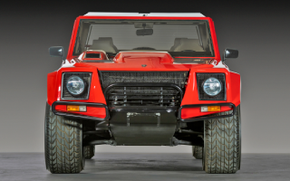

|  |
Lamborghini LM002
|
The Lamborghini LM002 is a four-wheel-drive luxury SUV that was produced by Lamborghini from 1986 to 1993. It is also known as the "Rambo Lambo" due to its rugged off-road capabilities and aggressive styling.
The LM002 is powered by a 5.2-liter V12 engine that was derived from the Lamborghini Countach sports car. It produces 444 horsepower and 368 lb-ft of torque, and is mated to a five-speed manual transmission. The car is capable of reaching a top speed of 118 mph and can accelerate from 0 to 60 mph in 7.7 seconds.
The exterior design of the LM002 is characterized by its boxy, angular shape and aggressive styling. The car features a large front grille, a muscular hood, and a prominent roof-mounted air intake. The interior is designed to be both luxurious and functional, with premium leather and wood trim throughout the cabin.
One of the most notable features of the LM002 is its off-road capabilities. The car is equipped with a four-wheel-drive system, high ground clearance, and large, chunky tires, making it capable of tackling rough terrain and off-road obstacles with ease.
While the Lamborghini LM002 was never a huge commercial success, it remains a cult classic and a highly sought-after vehicle among collectors and enthusiasts. It showcased Lamborghini's ability to produce vehicles that were both luxurious and rugged, and set the stage for the brand's later forays into the SUV market.